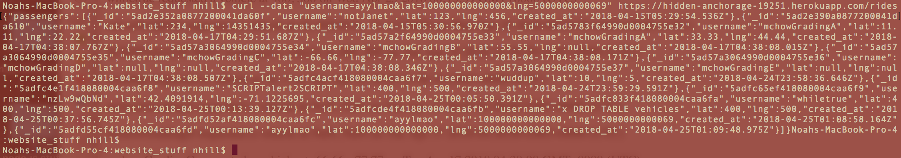
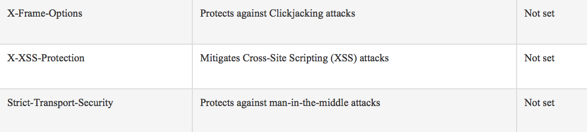
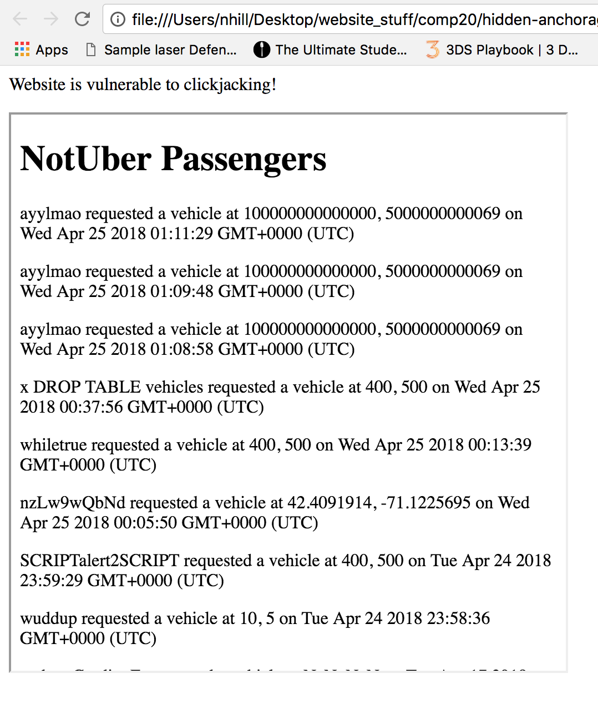
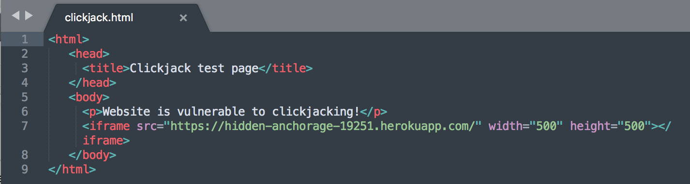

The following is a comprehensive security analysis of Janith Kulatunge's Comp20 Assignment 2 + 3 (Spring 2018). The server was writen using Node.js, Express, and MongoDB. The web application is supposed to store a user's latitude/longitude information, determine if the user is a vehicle/passenger, then load all of the sorrounding vehicles or passengers onto a map - emulating a ride sharing platform. My job was to analyze Janith's code for vulnerabilities including XSS, SQL Injection, Clickjacking, etc.
I began by reading Janith's source code, both his HTML and Node.js/Express server. I looked for where user input was being parsed into variables or used to change algorithm logic (stored into variables, used to access DB collections, etc). I then began curling different types of data to POST /rides as well as GET /vehicles.json, to see what kind of responses I could get. After manually searching for vulnerabilities, I utilized Burp Suite and pentest-tools online vulnerability scanner. I then used this results and some googling to try more complex hacks such as Clickjacking and XSS.
Overall, Janith's code was fairly well protected against basic hacking techniques. He stripped all his inputs of special characters effectively disabling XSS and SQL injections. Any attempts as passing malicious scripts would get nullified and converted to strings. Janith also checked to see if the request body properties were undefined or not before accessing his database. However, he did not check to make sure the request has username/lat/lng properties in the first place, nor check that they were valid. Additionally, I found several very important security headers that were not included in his server responses.
The first issue I found was a lack of input sanitation, found at every instance of accepting user input from a request body. This flaw is not veyr severe and easily corrected. While special characters were effectively removed, that was essentially all that was done sanitation-wise. No length or content verification is performed. For a more skilled "hacker" there certainly must be a way to work around the special character removal or inject javascript or malicious code. This can be solved by using some more if statements to verify input (verify that lat and lng are reasonable values, don't include letters, values aren't extended lengths, etc).
Second issue I found was that Janith's server responses were lacking security headers. This flaw can be found wherever a response is sent back to a client, in every GET or POST route. This flaw could potentially be very serious, as forgetting headers like "X-Frame-Options" or "Strict-Transport-Security" can make a website highly vulnerable to MitM or Clickjacking attacks. I found this vulnerability by running the source code through an online scanner (pentest-tools). This is a simple flaw to fix as response headers can be easily configured to send those fields. 
Expanding upon the aforementioned vulnerablilty, I was able to demonstrate Janith's server is especially susceptible to a Clickjack attack. I created a short HTML page that creates an iFrame using his website. Skilled hackers can maniupulate the iFrame to trick the user into pretending they're still on their own page while in reality, clicking "provide location data" could really be triggering an invisible, malicious button. This can be solved by including the X-Frame-Options security header.
 The final flaw that I found within Janith's assignments 2 + 3 is that his server is highly susceptible to a DoS or DDoS attack. Janith does not validate input based on length. This means a program could perpetually bombard the server with post requests and headers/bodies that are extremely long and time consuming/cpu-hogging to parse over and over again. This would effectively halt the server and make it really tough for other people to access the web app. Although potentially horrible, the true severity of this flaw is minor due to the fact that its highly unlikely that somebody would attempt to DDoS/DoS this website.